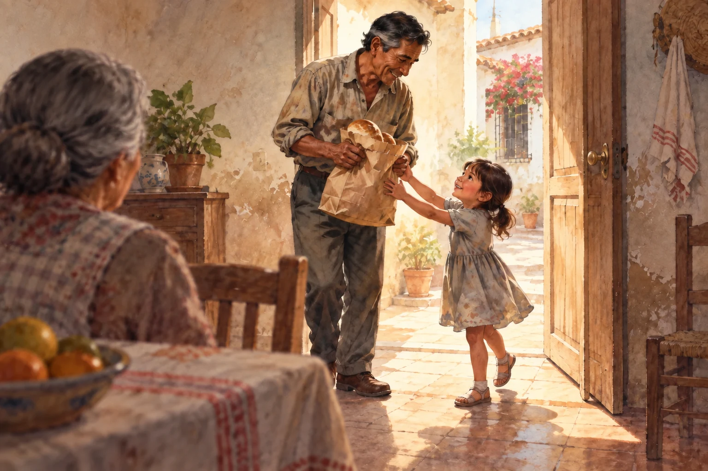

From their voice to the page
Bring a recording. Transcribe it with ElevenLabs and jump from a word back to the moment it was spoken.
The work that wore their hands. The friends who stood beside them. The ways a family kept going.
Turn a loved one’s memories into illustrated storybooks—for everyone who comes after.

The bread he brought home
EL PAN QUE PUDO TRAER · ILLUSTRATION · NOT A FAMILY PHOTOGRAPHBring a recording. Transcribe it with ElevenLabs and jump from a word back to the moment it was spoken.
Give them time to tell it from beginning to end. Optional help is there when they want it.
Make a translated edition and a narrated book. Read along, or just close your eyes and listen.
Work and friendship. Bread on the table. Illness, faith, and the people who kept showing up. A collection inspired by family recollections, with clear labels for what was remembered and what was imagined.
A phrase they always said. A story they told a hundred times. The things you remember are worth keeping, too. We’ll name them as your recollections, with room for the details you don’t quite know.
Work. Friendship. Hard times. The people who helped you through. Tell it your way—we’re listening.
Narration is a generated reading voice. Your original recording stays separate.
A self-contained HTML book, with its source, recording, and generated narration. Send the downloaded file to your family.
Saved on this browser. Download your books for a lasting family copy.